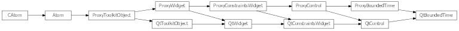

Bases: enaml.widgets.control.Control
A base class for use with widgets that edit a Python datetime.time object bounded between minimum and maximum values. This class is not meant to be used directly.
The minimum time available in the datetime edit. The default value is midnight.
The maximum time available in the datetime edit. The default is one second before midnight.
The currently selected time. Default is datetime.now().time(). The value is clipped between minimum and maximum.
A reference to the ProxyBoundedTime object.

Bases: enaml.qt.qt_control.QtControl, enaml.widgets.bounded_time.ProxyBoundedTime
A base class for implementing Qt-Enaml time widgets.
Return the current time in the control.
| Returns: | result (time) – The current control time as a time object. |
|---|
Set the widget’s minimum time.
| Parameters: | time (time) – The time object to use for setting the minimum time. |
|---|